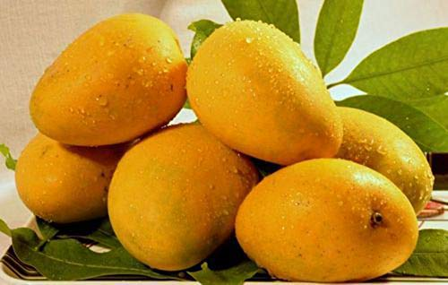

Mango
A mango is a stone fruit produced from numerous species of tropical trees belonging to the flowering plant genus Mangifera, cultivated mostly for their edible fruit. Most of these species are found in nature as wild mangoes. Worldwide, there are several hundred cultivars of mango. Depending on the cultivar, mango fruit varies in size, shape, sweetness, skin colour, and flesh colour which may be pale yellow, gold, or orange.

Mango